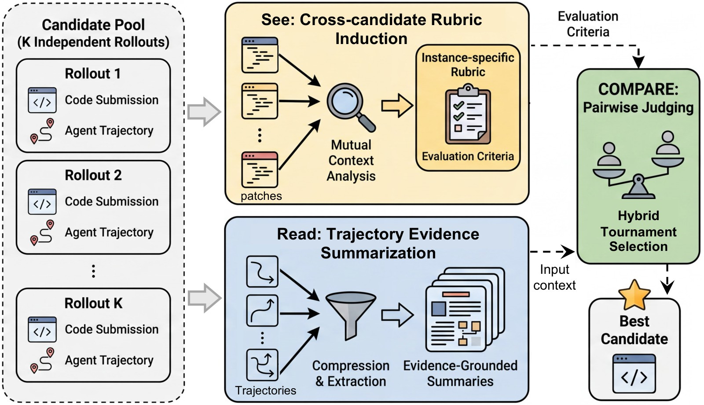
About Me
I am a Postdoctoral Researcher in the Department of Computer Science at UNC Chapel Hill, working with Prof. Huaxiu Yao. My research focuses on self-improving AI agents, including autonomous research agents, benchmarks for recursive self-improvement, and test-time scaling and verification.
I received my Ph.D. from Shanghai Jiao Tong University in 2025, advised by Prof. Junchi Yan, where I worked on quantum machine learning and graph learning for combinatorial optimization. I received my B.S. from Wuhan University, advised by Prof. Jiayi Ma, where I worked on image feature matching and visual place recognition.
News
- SRC, our execution-free verifier for agent test-time scaling, is accepted to NeurIPS 2026.
- We released RSI-Exam, a benchmark for recursive self-improvement through executable research.
- I joined UNC Chapel Hill as a Postdoctoral Researcher.
- I joined ByteDance (TikTok).
- I received my Ph.D. from Shanghai Jiao Tong University.
Selected Publications
* equal contribution, † corresponding author. Full list on Google Scholar.
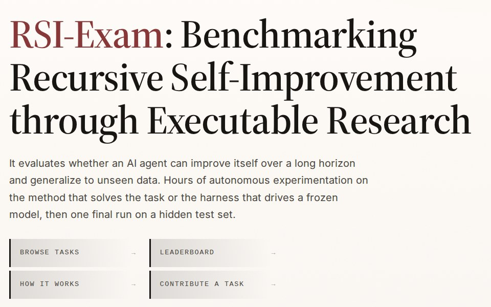
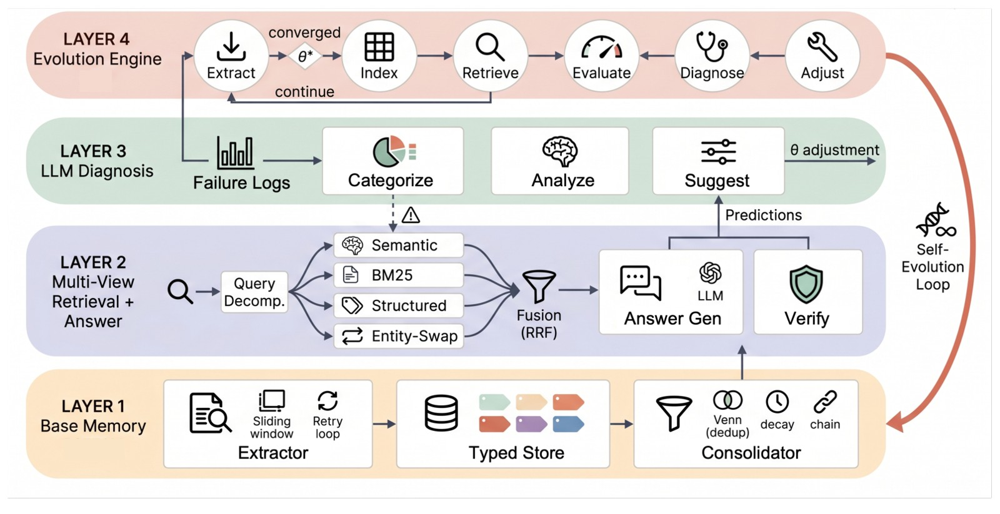
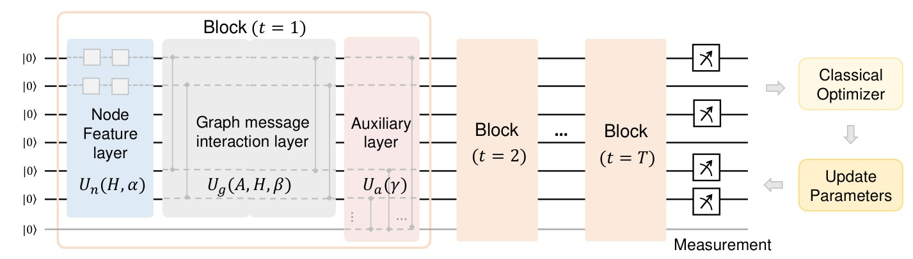
ICLR 2025
On Designing General and Expressive Quantum Graph Neural Networks with Applications to MILP Instance Representation
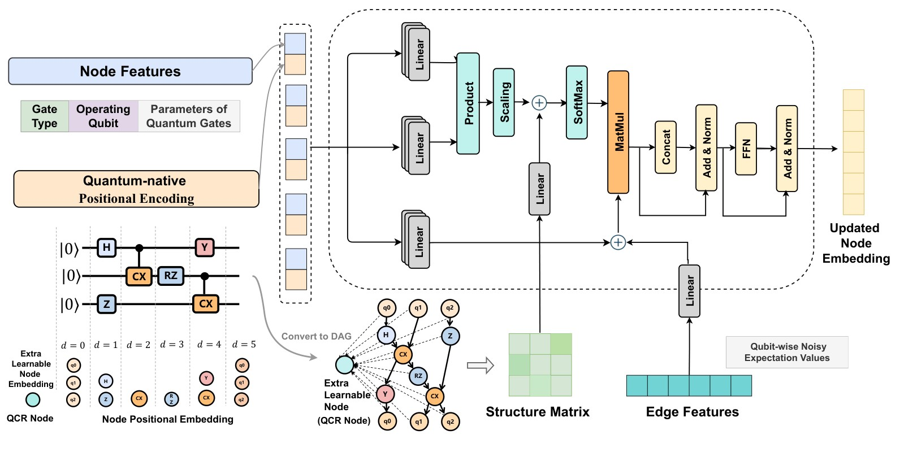
ICLR 2025
Beyond Circuit Connections: A Non-Message Passing Graph Transformer Approach for Quantum Error Mitigation
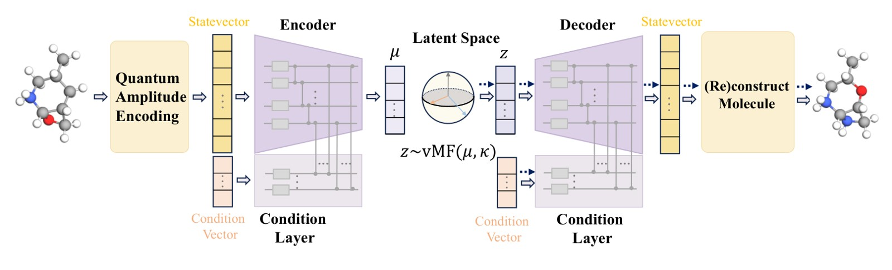
NeurIPS 2024
QVAE-Mole: The Quantum VAE with Spherical Latent Variable Learning for 3-D Molecule Generation
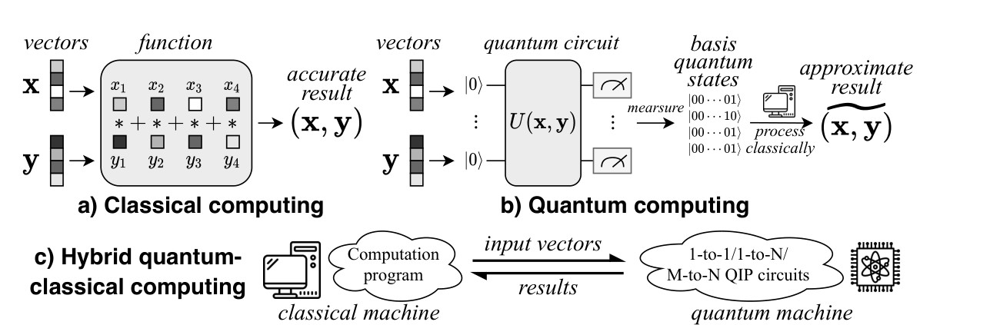
CVPR 2024
Circuit Design and Efficient Simulation of Quantum Inner Product and Empirical Studies of Its Effect on Near-Term Hybrid Quantum-Classic Machine Learning
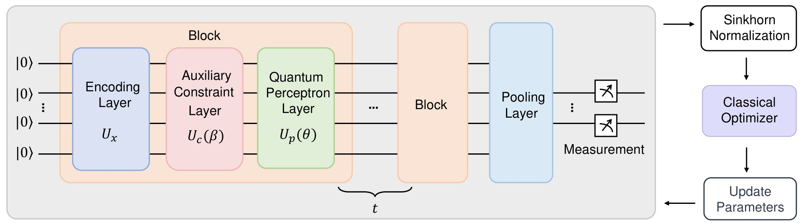
ICML 2023
Towards Quantum Machine Learning for Constrained Combinatorial Optimization: a Quantum QAP Solver
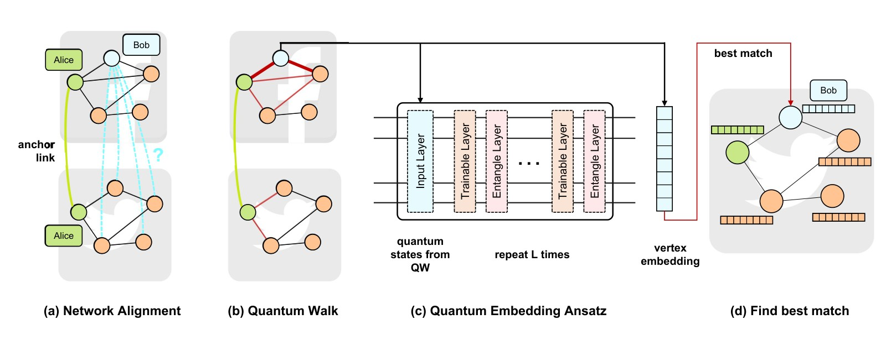
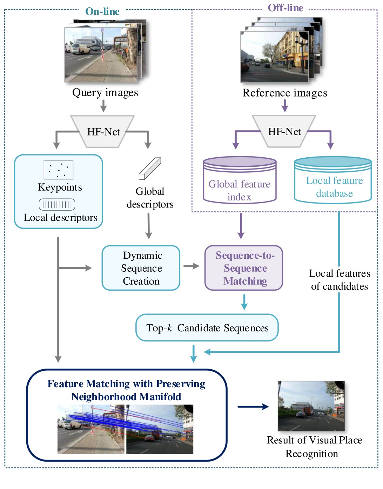
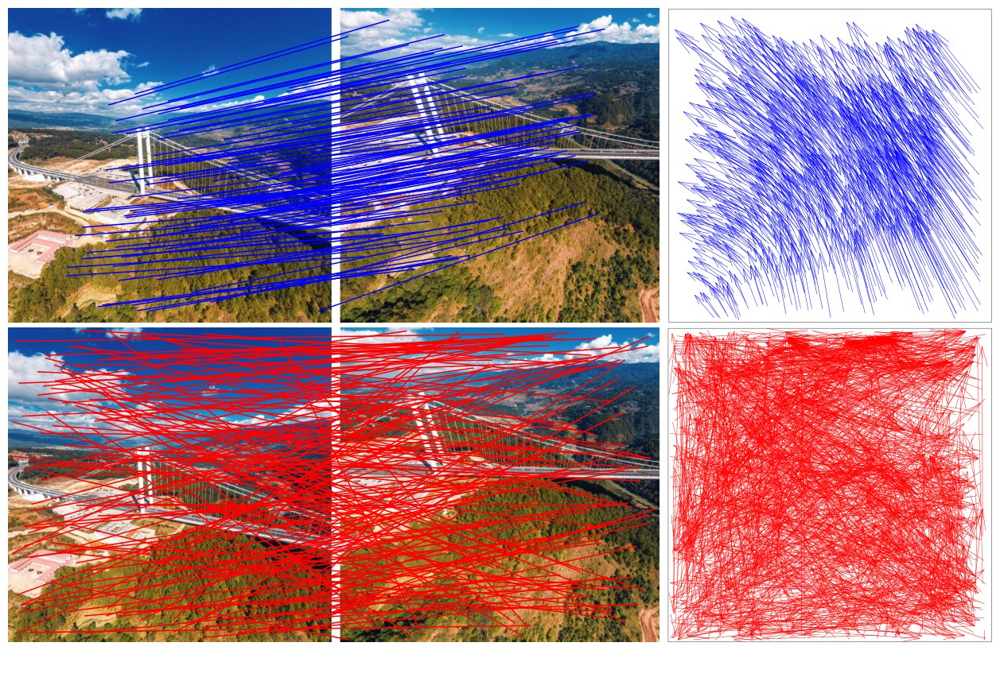
IEEE TGRS 2021
Local Affine Preservation with Motion Consistency for Feature Matching of Remote Sensing Images
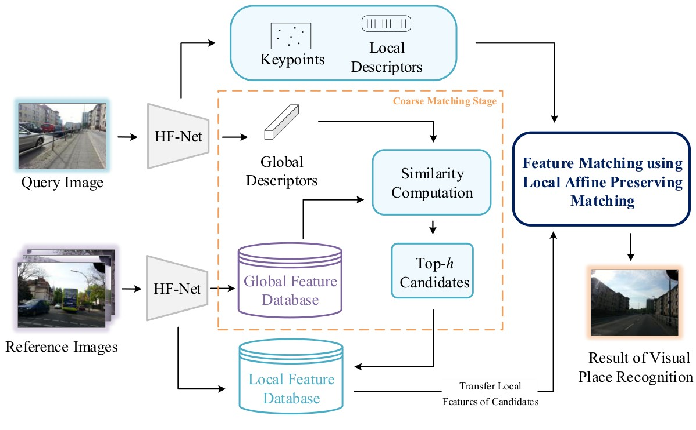
OTHER PUBLICATIONS
- On the Generalization of SFT: A Reinforcement Learning Perspective with Reward Rectification. Y. Wu, Y. Zhou, Z. Zhou, Y. Peng, X. Ye, X. Hu, W. Zhu, L. Qi, M.-H. Yang. ICLR 2026.
- KRIS-Bench: Benchmarking Next-Level Intelligent Image Editing Models. Y. Wu, Z. Li, X. Hu, X. Ye, X. Zeng, G. Yu, W. Zhu, B. Schiele, M.-H. Yang, X. Yang. NeurIPS 2025.
- Representation Steering via Null-space Alignment for Concept Unlearning in Diffusion Models. Y. Hao, C. He, S. Wang, Y. Wu, X. Ye, X. Zhu, J. Zhang, M. Wang. ACM MM 2026.
- AutoResearchClaw: Self-Reinforcing Autonomous Research with Human-AI Collaboration. J. Liu, S. Qiu, M. Li, B. Li, H. Ji, S. Han, X. Ye, et al. arXiv 2026. arXiv
- ClawArena-Team: Benchmarking Subagent Orchestration and Dynamic Workflows in Language-Model Agents. K. Xiong, H. Ji, S. Qiu, Z. Zheng, C. Xie, X. Ye, H. Yao. arXiv 2026. arXiv
- CoHARL: Co-Evolving Agent Policies and Executable Harnesses with Reinforcement Learning. J. Chen, P. Xia, K. Zeng, S. Han, Z. Zhang, C. Fleming, X. Ye, H. Yao. arXiv 2026. arXiv
- Alignment Tipping Process: How Self-Evolution Pushes LLM Agents off the Rails. S. Han, K. Xiong, J. Liu, X. Ye, et al. arXiv 2025. arXiv
- QEM-Bench: Benchmarking Learning-based Quantum Error Mitigation and QEMFormer as a Multi-ranged Context Learning Baseline. T. Bao, R. Zhong, X. Ye, Y. Tang, J. Yan. ICML 2025.
- Tensor Network: From the Perspective of AI4Science and Science4AI. J. Yan, Y. Tang, X. Ye, H. Xiong, et al. IJCAI 2025.
- Loop-Closure Detection Using Local Relative Orientation Matching. J. Ma, X. Ye, H. Zhou, X. Mei, F. Fan. IEEE T-ITS 2021.
Experience
UNC Chapel Hill, Postdoctoral Researcher2026.03 – nowLLM agents, verification, recursive self-improvement.
ByteDance (TikTok)2025.07 – 2026.03Research intern, then full-time.
RedNote (Xiaohongshu), Research Intern2024.06 – 2024.08Built a GNN-based full-domain retrieval system for recommendation, from graph construction to distributed LightGCN training and GPU item-to-item inference.
Education
Shanghai Jiao Tong University, Ph.D.2020.09 – 2025.06Electronic Information Engineering. Advisor: Prof. Junchi Yan. GPA top 2%.
Wuhan University, B.S.2016.09 – 2020.04Electronic Information Engineering. Advisor: Prof. Jiayi Ma. GPA top 3%. Excellent Graduation Thesis, Excellent Graduate.